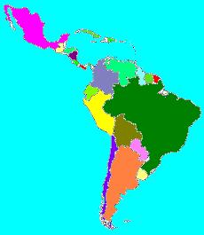

Latinoamérica se extiende desde
la frontera del río Grande o Bravo del Norte hasta la denominada
Tierra del Fuego. Comprende el extremo sur de Norteamérica
(México), Centro, Sudamérica y las Antillas. La mayor
parte de América Latina fue colonizada por los españoles;
las Guayanas y parte de las Antillas fueron colonizadas por
ingleses, franceses y holandeses. A toda esta área se le
denomina Latina porque su colonización fue llevada a cabo por
países cuyas lenguas se derivan del latín.
Colón pisó el suelo americano hace más de 500
años y desde entonces todo cambió tanto para
América, como para España y Europa. Latinoamérica
puede considerarse dividida en dos grandes áreas de influencia:
la española y la portuguesa, según la colonización
que realizó cada metrópoli. España ocupó el
oriente de Sudamérica y Portugal, en la misma época,
ocupó la parte oriental que hoy corresponde a Brasil. Esta
división obedeció a la intervención de Alejandro
VI, que para resolver el conflicto entre ambas potencias, trazó
una línea imaginaria de un polo a otro, 100 leguas al oeste de
la más occidental de las islas Azores y el Cabo Verde. El mundo
quedo así dividido en dos partes: el occidente le
correspondió a España y el Oriente a Portugal.
La colonización ibérica determinó una cultura muy
diferente a la anglosajona y se caracterizó por la
explotación de las tierras descubiertas y sus habitantes. Los
colonizadores se mezclaron con los indígenas y del cruce de sus
descendientes con estos y los esclavos negros importados de Africa, se
completó un complejo mosaico étnico de razas y culturas.
Toda la gran región latinoamericana se encuentra ubicada en el
continente americano. Separada de Europa, Asia, África y
Oceanía por inmensos océanos, este se mantuvo aislado del
resto del mundo durante largo tiempo. Las investigaciones
científicas han demostrado que posiblemente los primeros hombres
que llegaron al continente americano pasaron por el estrecho de Bering,
hace cerca de 40 000 años. Posteriormente llegaron otros grupos
de Asia a través del océano Pacífico. Estos
primeros habitantes de América desarrollaron culturas muy
diferentes, entre las que se destacan la de los mayas, aztecas e incas.

Versión de prueba, Para ser usada en el servidor de fundación karisma
|orientaciones||Consultar mapas||Consultar textos||temas interesantes||curiosear||actividades|
